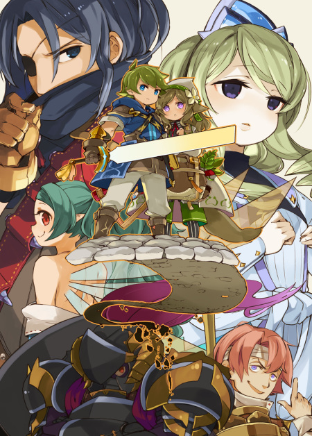

■2019-09-21 (土) 片道勇者ノベル発売2週間前！＆会話見本▼
片道勇者のノベライズ『片道勇者 滅びの闇と繰り返す英雄』、
発売まであと2週間となりました！
発売は10/5（日）！ よろしくお願いします。
で、これまでの間にカバーイラストが発表されていたのでご紹介します！

イラスト：モタ 様
表紙に出ちゃったのでネタバレしちゃいますが、
ノベルは「無印版ベースのストーリー」でありながら、
プラス版より「アルバート」（左上）が登場します！
そして「ネムリ（中央右のしっぽの生えた女の子）」が主人公に守られている、
いかにもメインヒロインっぽい立ち位置に！
果たしてどんな物語が繰り広げられるのか！
予約はすでに可能ですので、
気になる方はよければぜひこちらからどうぞ！ 発売は10/5です！
↓

片道勇者 滅びの闇と繰り返す英雄
Amazonページへ
￥1,540（税込）
【最初にキャラクターの会話見本を作ったお話】
今回はノベライズ企画において、私がどんな「準備」をしたかのお話をします！
ノベライズ企画が立ち上がったとき、私はまず
「ゲーム内のデータだけだと仲間キャラ同士の会話がないから、
小説でキャラの間にどんな話をさせればいいか全然分からないじゃん！
急いで会話の見本を作らないと！」
と考え、「無印版の全キャラ同士の組み合わせ」について
あわてて会話見本の資料を作りました。
（ネムリ×フリーダ、ネムリ×パンティ、ネムリ×デュークガルツ、ネムリ×ヴィクター、
ネムリ×魔王、ネムリ×イーリス、フリーダ×パンティ、フリーダ×デュークガルツ……のような全組み合わせ）
今回はその資料の中から、割とレアそうな組み合わせである
「イーリスと魔王」「パンティと王様」の会話をご紹介！
これらは「2人で一緒にいるシーン」を想定した会話見本となっています。
◆妖精イーリス×魔王
仲間になった魔王がイーリスを見て、自分の時代にいた人工生物について語る。
イーリス「ねえ、魔王ってなにか食べるの？ 用意する？」
魔王「いや、私は喰わん。喰えぬと言ったほうが正確だな。
あの王女と同じ扱いでいい」
イーリス「あ、そうなんだ。じゃお水だけね、はーい」
魔王「ところで小妖精……おまえ、私が相手でもまったく物怖じしないな」
イーリス「え、そうかなー？ まあガシって握られたら死んじゃう程度の命だしー？
気にしすぎたら何もできないよ」
魔王「そういうものなのか？ 私が見た人工生物はもっとおとなしかったが……」
イーリス「えっ、見たことあるの！？」
魔王「我々の時代で、たまにな。おまえみたいなやつに掃除をさせたり
書記をさせているのを見たことがある」
イーリス「へー。でもこの体だとお掃除は時間かかりそう」
魔王「一日中やらせていたからな。
『人間ではないから長く働かせてもよい』という論理だった」
イーリス「うわー差別っぽーい」
魔王「だが人の社会は、おそらく今もそういうものだろう。
変な思い込みや常識が常にみなを縛っていて、
本来支配されずともよい者もそれに支配されていて……
時代が変わればうつろう程度の常識であるにも関わらずな」
イーリス「そうだね。ちょっと分かるよ……」
魔王「まあ、人類が昔と変わらんからこそ、こうやって
通じ合う話ができるのかもしれんがな……」
◆傭兵パンティ×ヴィクター王
軽い上下関係はあれど、この2人だと素直な男同士の会話もしそう。
パンティ「いえーい王様ー！ 俺が魔王倒すから褒賞くれよ！」
ヴィクター「わしはもう財産なんぞ何も持っとらんぞ。」
パンティ「マジかよ！ じゃあ王様の意味ねーじゃん！」
ヴィクター「じゃよなあ。カネも出せん王など価値ないじゃろ？」
パンティ「じゃあ何か便宜はかってくれよ！ コネとか！」
ヴィクター「もう部下もおらんし、近所の国ごとなくなったから何もしてやれんぞ」
パンティ「王様マジ役に立たねえ！」
ヴィクター「まあ国のおこしかたくらいなら教えてやれるかもしれんな」
パンティ「国作りはしたくねーなー。管理とか面倒臭そうだし」
ヴィクター「じゃよなー、よく分かっておるではないか！」
パンティ「なんだ王様もそう思ってたのかよ！ やっぱ身軽なのが一番だよなー！」
ヴィクター「まったくじゃわい」
イーリス（あれ、なんか意気投合してる！？）
※傭兵パンティは勇者として背負うものが重くて故郷を離れたので、
こういった反応をするだろうと考えます。
といった感じで、こんなのが全部で21パターン！
（アルバートは途中で湧いたので無印版の 7人×6人÷2＝21 パターン）
1つ1つは短いながらも、キャラ同士の接し方や、どう対応するかという情報が
「0」から「1」にはなるわけで、少しは執筆のお役に立てていればうれしいですね。
例えば今回挙げなかった中だと、
「薬師ネムリがフリーダ王女にどう接するか」という点だけでも、
方向性の指示がまったくなければ3パターンくらいに分岐するかもしれません。
A：ネムリ「えっ、フリーダさんは王女なんですか？ えらい人……なんですか？」
（住んでいた集落が完全に王国から独立していて王や貴族の存在を知らない）
B：ネムリ「お、王女様なんですか！？
こ、このたびはごきげんうりゅわしゅ（噛んだ）」
（教育を受けているか、集落が王国と関わりがあり、王や王族の存在を知っている）
C：ネムリ「王女様、ですか……私の村って税の取り立てが厳しくて
いつも貧しかったんですよね……」
（自分たちから取り立てた税で贅沢な暮らしをしている人々に少し恨みがある）
この中から、「ゲーム内容から予想できる、原作者の想定したネムリ像を選べ」
と言われたら、ちょっと悩む気がします。
ゲーム内だけでは情報が少ないため、どれも十分にありうるでしょう。
そしてノベライズでは、こういった問いが執筆の中で何十回と出てくるわけで、
情報なしに全部を正解させるのは大変です！
10回に9回当てても、残り1回で失敗したらそのたびに、
「XXはこんなキャラじゃない！」なんて言われかねないんですよ！
そんなリスクを考えれば、原作者である私が「キャラクターの資料を作る」とさえ
一言も言っていない段階でこの案件を引き受けてくださったライターさんは
勇気がありすぎます。ヤバい。
そしてまた、これ以外にも足りない資料が山ほどある中、
重要そうな疑問点を欠かさずこちらに投げてくださった
著者さまと編集さまには感謝しかありません。
みなさんとても仕事ができる人たちだったので、私も見習いたい限りです。
会話の見本は上で挙げた2つ以外にもいっぱいあるので、
そのうち日誌のネタがなくなった頃に上記のように載せたり、
動画量産の練習も兼ねて会話シーンの「動画化」などに
挑戦してみてもいいかなと考えています。
以下はいただいた拍手コメントより、ノベライズについてのご質問！
＞片道勇者ノベルの電子書籍版は出ますか？
編集さまに確認したところ、【10月5日の0時】より
主要書店で電子版が配信される、とのことです！
なので私も、発売されたらいつでも出先で紹介できるように、
電子版を買おうと考えております。
（私は電子書籍リーダーとしてKindleを使っていますが、Kindle書籍は
作者自身の本であろうと自分で買わないと所有状態にできないっぽいんですよ）
ちなみに今回のノベルとは違うのですが、、
既刊の『片道勇者TRPG』が昨日の9/20にちょうど電子版が発売されたので、
「欲しいけど置く場所がなくて買えない！」とお思いだった方は、
よければこの機会にぜひご検討ください。簡単な設定資料集としても使えそうです。
こちらはレイアウト固定（1ページが1枚の画像になってるイメージ）なので、
タブレット端末をお持ちでしたらそちらの方が読みやすいと思います。
『片道勇者TRPG』シリーズ3冊 Kindle版


2019-09-21 (土)  カテゴリ: 片道勇者
カテゴリ: 片道勇者
 カテゴリ: 片道勇者
カテゴリ: 片道勇者